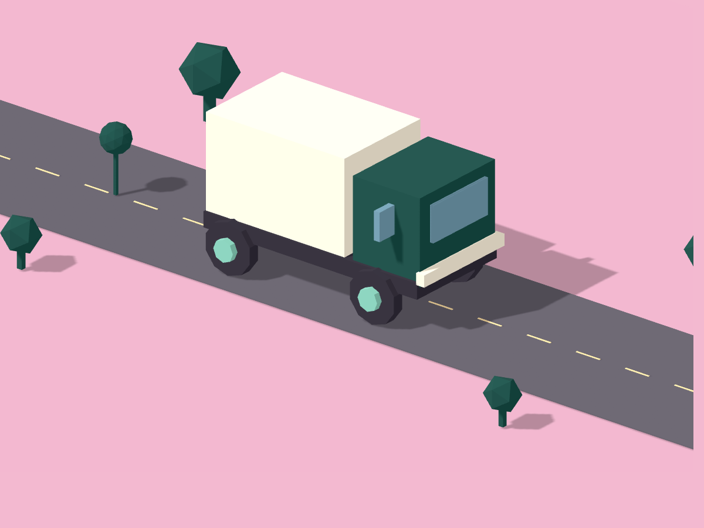
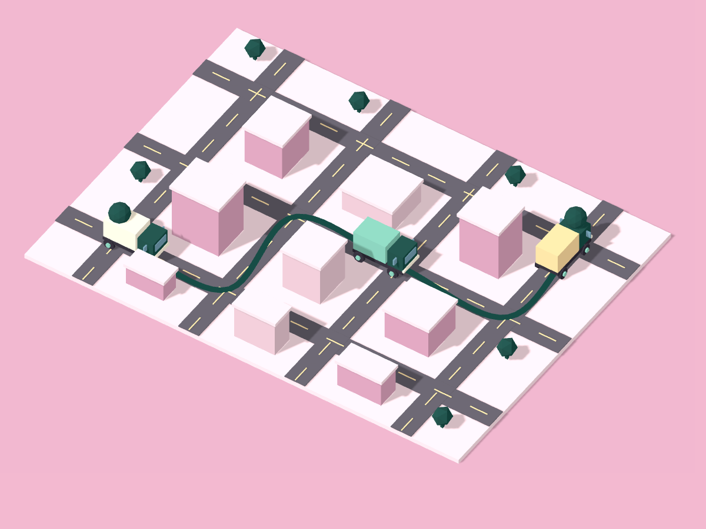
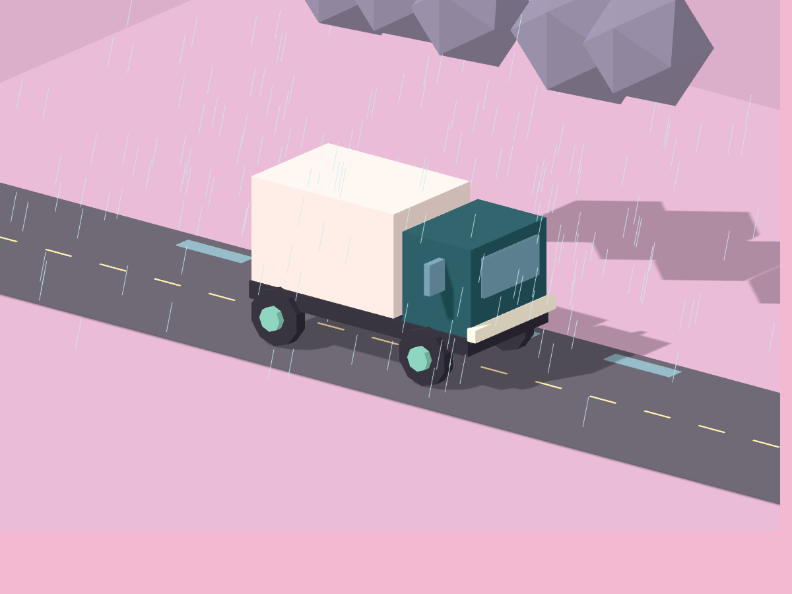
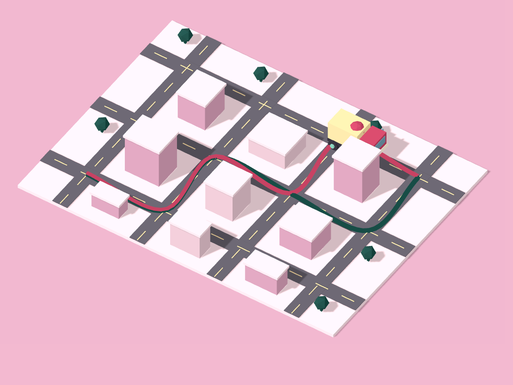
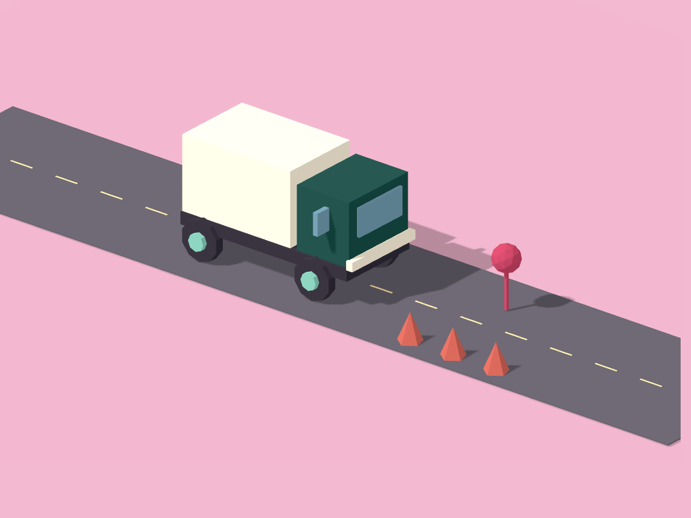
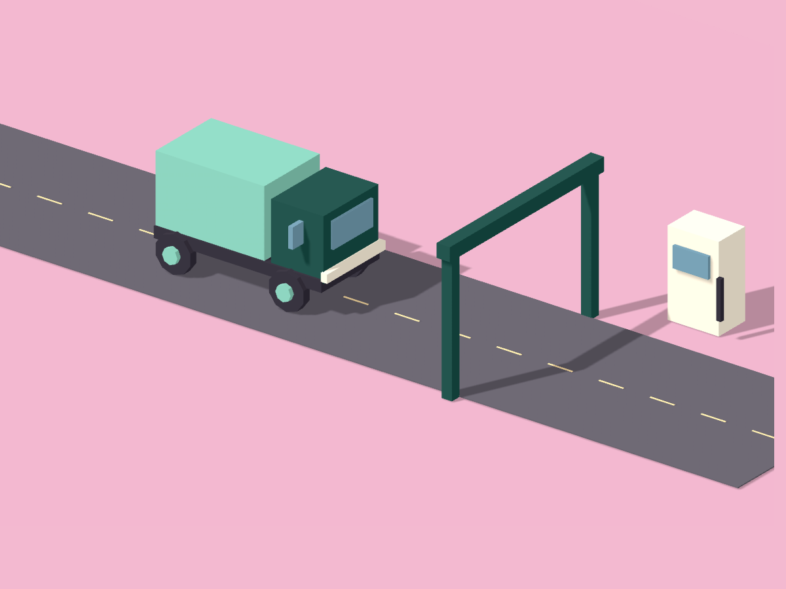
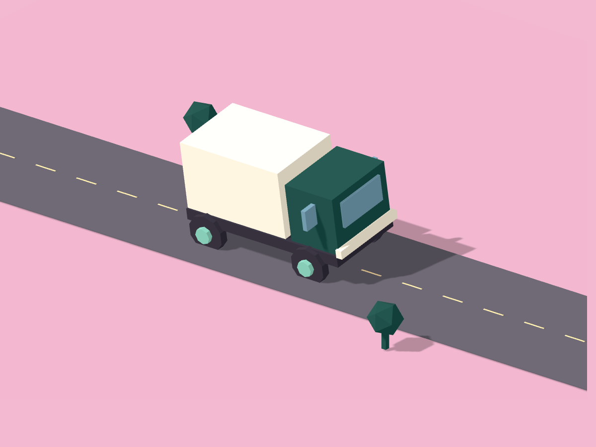

Build-Off concept
Truck
Tracker
A clearer view of every trip
A fleet map, route alerts, and driver context for a trucking business.

Concept visualization · Use the arrow keys to navigate
01 / 10Problem to validate with the client
Dispatcher questions
The useful answer arrives while the truck is still on the road.
Where is the truck?
Will it arrive on time?
Why did it leave the route?
What should we do next?
Client discovery will identify which question costs the most time today.
02 / 10Fleet view
One map for active trips
See each truck's location, speed, status, assigned delivery, and ETA.
Select a truck to open its trip details and recent events.

Sample 3D map render
03 / 10Weather context
Conditions around each truck
A weather feed can show rain near a truck's current location.
The visual cue helps a dispatcher read an ETA change in context.

Illustrative rain effect; weather and delay causation require separate data
04 / 10Route exceptions
Spot a meaningful detour
Compare the GPS trail with the planned route. Alert after a configurable distance and duration threshold.
Check road context, then ask the driver for the reason.

AI may suggest an explanation; the dispatcher verifies it
05 / 10Driver context
Keep the explanation with the trip
The driver can answer with a voice message or photo.
AI transcribes or captions the report. The original evidence stays attached to the trip for review.

Example: a driver reports a road closure
06 / 10Finance and operations
Review each trip's cost
Estimate fuel and tolls from the route and known truck assumptions.
At trip end, compare the estimate with receipts and the actual route. Flag large gaps for review.

A cost gap is a question for review, not proof of misconduct
07 / 10Later phase
Safer incident checks
A fixed IMU can measure truck tilt and motion alongside GPS location.
An unusual signal should prompt a dispatcher to check the truck and contact the driver.

Rollover detection and emergency escalation require field validation
08 / 10Hackathon build
MVP system
Truck data
Use a phone location feed or trip replay for position and speed.
Trip logic
Calculate route position, ETA, and deviation events.
Low-code workflow
Send alerts and attach driver responses to each trip.
AI assistance
Summarize voice, images, and possible route context for review.
The 3D view presents the trip data in the browser.
09 / 10What the demo should prove
One trip, one clear response
A truck leaves its route. The dispatcher finds it, sees the ETA change, asks the driver, and records the reason.
Time to find the affected truck
Time to explain a deviation
ETA error against actual arrival
Number of alerts worth acting on
Measure these with the client before claiming improvement.
10 / 10